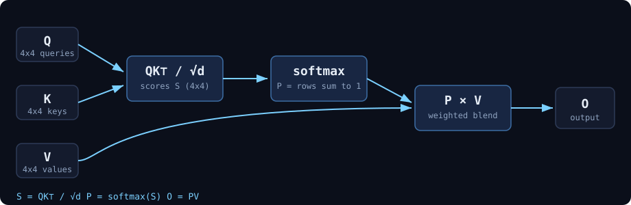
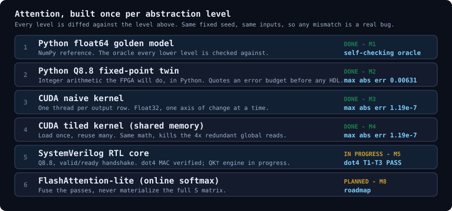

Attention Accelerator:
Python → CUDA → RTL
I am building a single-head scaled dot-product attention engine, the core math behind every transformer, from a Python reference all the way down to synthesizable SystemVerilog, rebuilding the exact same operation at six levels of abstraction and diffing each one against the last.
Result so far: scaled dot-product attention built and cross-verified across NumPy, Q8.8 fixed-point Python, naive and tiled CUDA, and SystemVerilog RTL, each level diffed against the one above. The CUDA kernels agree with the float64 reference to about one float32 epsilon. Benchmarked kernel speedup and achieved bandwidth, plus FPGA fmax, DSP usage, and cycle latency, are in progress and tracked in the status table below.

Attention is three matrix operations. Given queries Q, keys K and values V, you compute a score matrix, turn it into a probability distribution with softmax, and use those probabilities to blend the values:
S = Q · K⊤ / √d // token-by-token scores P = softmax(S) // each row sums to 1 O = P · V // weighted blend of the value rows
That math is simple enough to check by hand at toy dimensions, which is exactly the point. I run everything at N = d = d_v = 4 with a fixed random seed so the inputs never drift. When a lower level disagrees with the golden model, it is always a real bug in my code, never a change in the data.
Why build it six times
The goal is not another attention library (PyTorch already has one). The goal is to understand the operation deeply enough to implement it on hardware, and to build the verification discipline that hardware demands. Each level strips away an abstraction and forces me to own something the level above hid from me: floating point, then fixed-point arithmetic, then GPU parallelism, then the memory hierarchy, then bit-level RTL and handshaking.

How to think about the cost
The lens I carry across every level is the roofline question: is this step limited by compute (doing FLOPs) or by memory (moving bytes)? Many attention configurations, especially decode and any kernel that materializes the intermediate score matrix, are limited by memory traffic more than arithmetic; the balance shifts with shape, datatype, and hardware. That lens explains most of the design work below. The naive GPU kernel re-reads every key and value row once per query, so it moves N times more bytes than necessary; a single-block tiled kernel stages each input tile into on-chip memory once and reuses it, raising arithmetic intensity (FLOPs per byte). At realistic sizes the full tensors do not fit on chip, so tiles are re-loaded across thread blocks and the win is fewer global reads per tile rather than a single global load. On the FPGA the same tension returns as an area-versus-cycles trade: one multiplier reused over D cycles is small and slow, D multipliers in parallel are large and fast.
Correctness first, then cost. Each level is proven against the one above (same seed, same inputs) before I reason about whether it is compute-bound or memory-bound. A performance win that moves the answer is not a win.
Architecture & results so far
Every level is validated against the one above it, so I always have an unambiguous oracle. Here is where each stage stands today:

| Level | What it is | Result | Status |
|---|---|---|---|
| M1 | Python float64 golden model | self-checking reference (softmax rows sum to 1) | Done |
| M2 | Python Q8.8 fixed-point twin | max abs err 0.00631 vs golden (~0.6%) | Done |
| M3 | CUDA naive kernel (float32) | max abs err 1.192093e-07 = the float32 floor (2-23) | Done |
| M4 | CUDA tiled kernel (shared memory) | max abs err 1.192093e-07, bit-identical to M3 | Done |
| M5 | SystemVerilog RTL core (Q8.8) | full datapath, 52/52 values exact vs the integer spec at all four stages | Done |
| M6 | Host to FPGA link (AXI-Stream + DMA, PYNQ) | packaged as an AXI IP with per-phase cycle counters and a completion interrupt; caught a counter race in integration | In progress |
| M7 | FPGA bring-up on ZUBoard 1CG (XCZU1CG) | synthesis, timing closure, on-hardware diff vs the fixed-point model | Next |
| M8 | FlashAttention-lite, RTL (online softmax) | 360 cy on one multiplier, beating the naive core on four (515 cy); N² buffers gone | Done |
| M8 | FlashAttention-lite, CUDA and Triton | on an RTX 4070 Laptop GPU: Triton at 74 to 131% of cuDNN; CUDA kernel 3.7x faster after following Nsight (1.13 TFLOP/s); found and fixed a shared-memory race | Done |

The result that taught me the most is the one in that chart. I parameterized the MAC count in the RTL and swept it, expecting the usual area-for-speed trade. Four times the multipliers bought 1.28x. The matmuls really did get 3.4x faster, but the serial divider inside softmax costs the same 449 cycles regardless, so adding lanes only grew its share of the runtime, from 68% to 87%. The fix was not more hardware. Rewriting softmax to stream (M8) got 1.83x at identical area and removed the N² score buffers entirely, which at N=128 and head dim 64 is the difference between needing roughly 64 KB of BRAM and needing 66 words. I wrote that up in the dev blog.
The two CUDA numbers are the ones I am most proud of. 1.192093e-07 is about one float32 epsilon near unity (2-23 is the ULP spacing near 1.0). Because I compute the golden model in float64 and cast the exported inputs to float32, a difference this small means close numerical agreement for this test case, not a bug in the kernel. Getting there twice, once naive and once tiled, is strong evidence the kernels are correct, not just close.
The fixed-point path to hardware
FPGAs do not do floating point for free, so before writing a line of HDL I built a Q8.8 fixed-point twin of the model in Python: real numbers scaled by 256 and stored as signed 16-bit integers. The one rule the whole thing lives on is that multiplying two Q8.8 numbers doubles the fraction bits to Q16.16, so after every integer matmul I divide the accumulator back down by SCALE²:
Qq, Kq = quantize(Q), quantize(K) # real -> Q8.8 integers (saturated)
S_raw = Qq @ Kq.T # integer matmul -> Q16.16
S_fixed = (S_raw / (SCALE * SCALE)) / np.sqrt(d) # /SCALE^2, then /sqrt(d)That let me quote a concrete 0.6% worst-case error budget up front, and it surfaced a classic hardware bug where it is cheap to see: quantizing a normalized softmax row breaks its normalization (row sums drift to 255-257 instead of a clean 256). That informs whether the RTL needs a renormalization stage or more fraction bits.
The RTL now under way (M5) is a Q8.8, 16-bit signed datapath with a valid/ready handshake on every module, the same handshake semantics AXI4-Stream uses, so wrapping these blocks as AXI4-Stream later is straightforward. The first module is a time-multiplexed dot-product MAC (dot4): it accumulates the raw Q16.16 products in a wide accumulator, then shifts back to Q8.8 with an arithmetic shift (to keep the sign bit) and saturates exactly once at the end.
assign shifted = acc >>> FRAC; // Q16.16 -> Q8.8, keep the sign bit
always_comb begin
if (shifted > sMAX) s = sMAX; // clamp high
else if (shifted < sMIN) s = sMIN; // clamp low
else s = shifted[DW-1:0]; // in range
endIt is verified in simulation across basic, signed, and saturating cases. The QK⊤ engine that reuses this one dot4 over all token pairs is in progress. Full step-by-step write-ups for every level are on the blog.
Toolchain
Python / NumPy for the golden and fixed-point models; CUDA C++ compiled with nvcc for the GPU kernels (developed on an M1 Mac, run on a separate GPU machine via a byte-exact .npy data bridge); SystemVerilog targeting a Xilinx/AMD FPGA through Vivado, with XSim for simulation and XDC constraints. The roadmap continues into host↔FPGA UART communication with a packet-parser FSM (M6), on-hardware bring-up and timing closure (M7), and finally a FlashAttention-lite online-softmax variant (M8).
Read the full build log
I keep a running dev-log with every milestone, every bug, and the lessons from each one: the honest version, mistakes included.